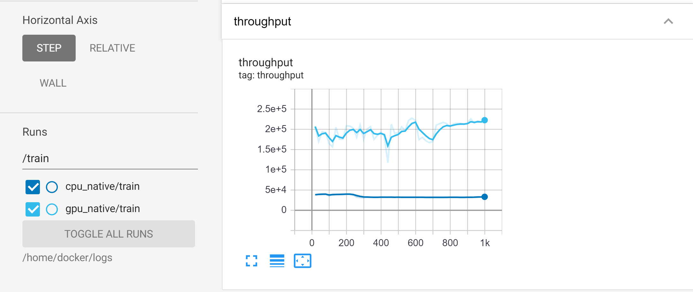
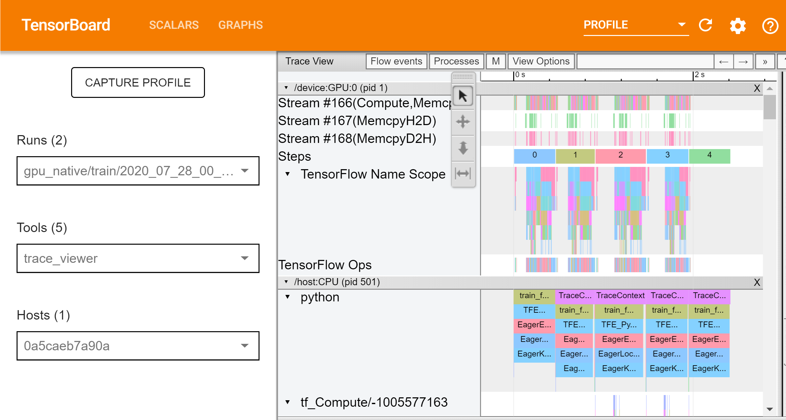
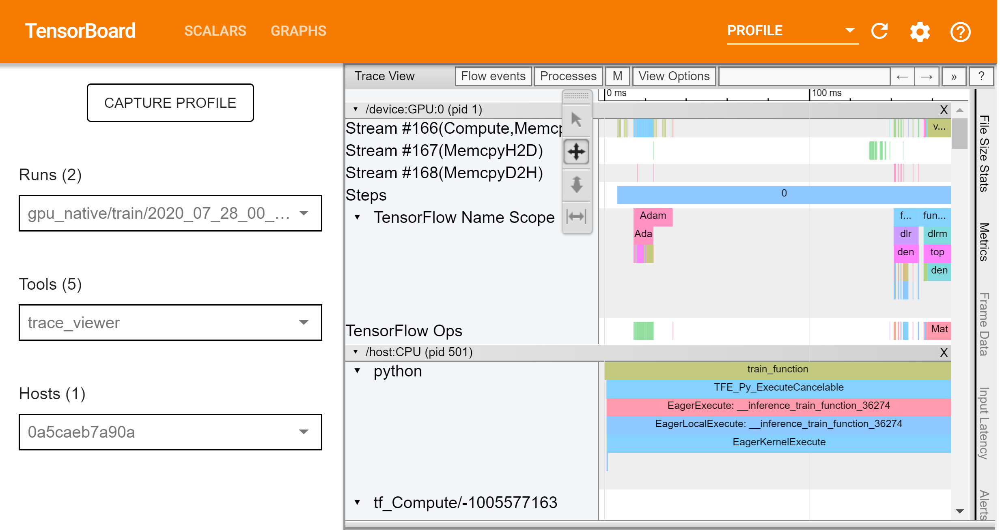
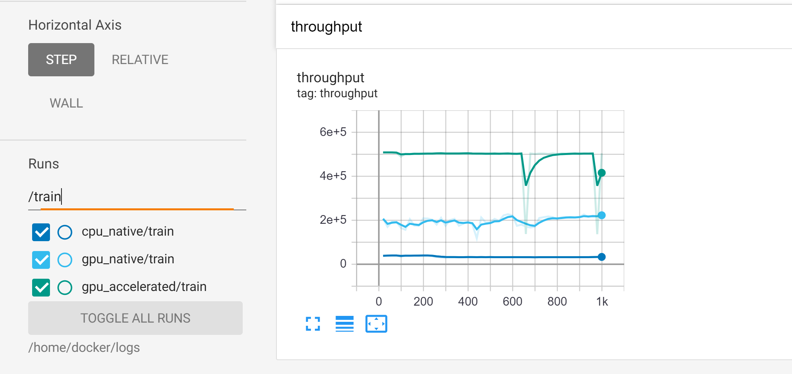
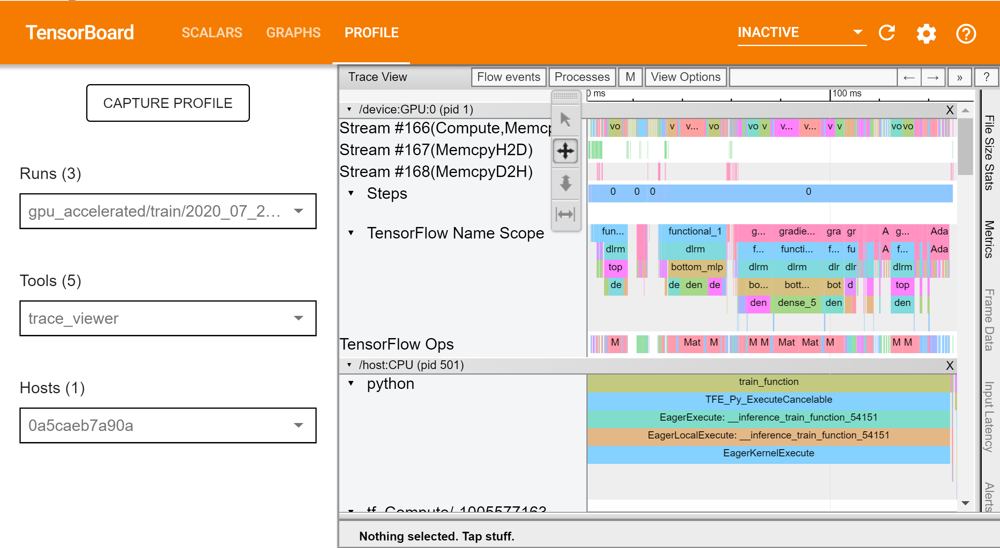
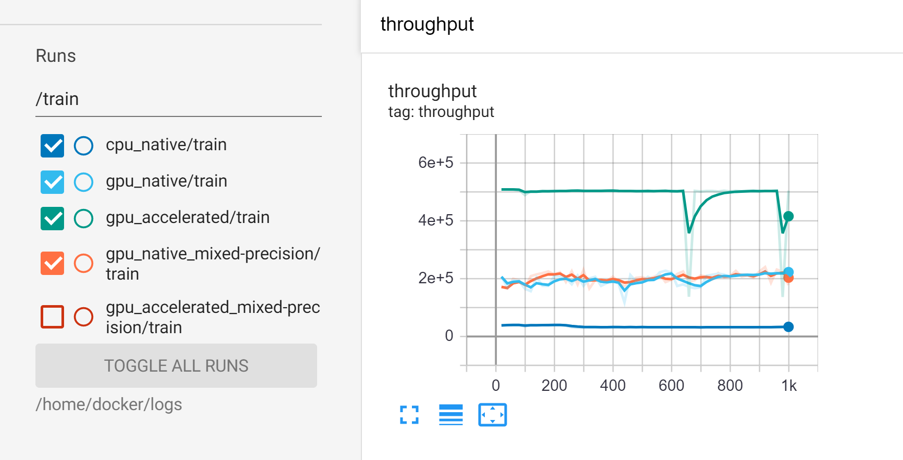
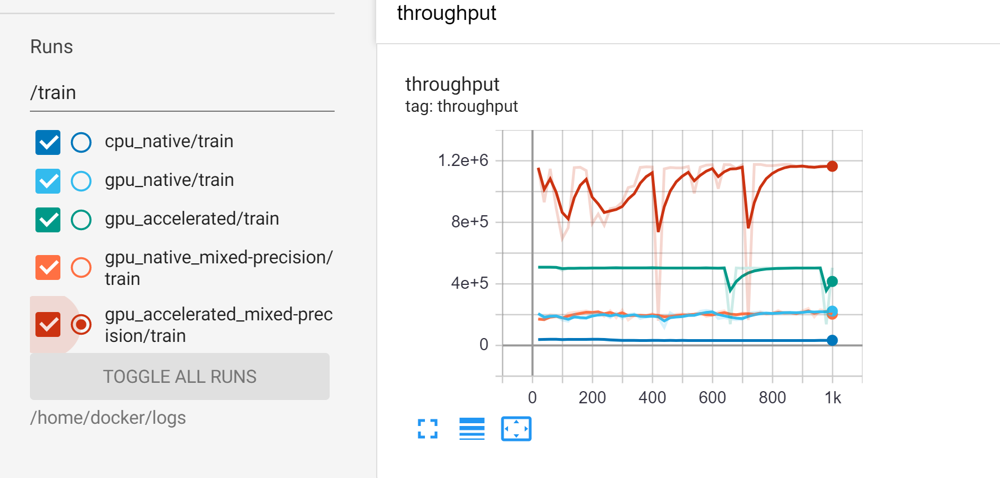
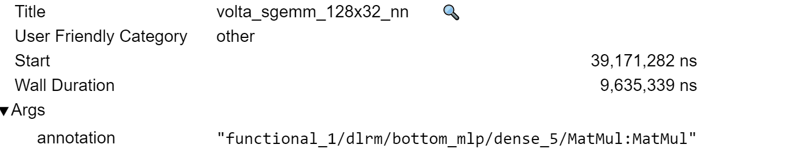
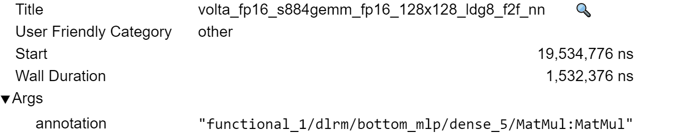

# Copyright 2021 NVIDIA Corporation. All Rights Reserved.
#
# Licensed under the Apache License, Version 2.0 (the "License");
# you may not use this file except in compliance with the License.
# You may obtain a copy of the License at
#
# http://www.apache.org/licenses/LICENSE-2.0
#
# Unless required by applicable law or agreed to in writing, software
# distributed under the License is distributed on an "AS IS" BASIS,
# WITHOUT WARRANTIES OR CONDITIONS OF ANY KIND, either express or implied.
# See the License for the specific language governing permissions and
# limitations under the License.
# ==============================================================================
Training Tabular Deep Learning Models with Keras on GPU
Deep learning has revolutionized the fields of computer vision (CV) and natural language processing (NLP) in the last few years, providing a fast and general framework for solving a host of difficult problems with unprecedented accuracy. Part and parcel of this revolution has been the development of APIs like Keras for NVIDIA GPUs, allowing practitioners to quickly iterate on new and interesting ideas and receive feedback on their efficacy in shorter and shorter intervals.
One class of problem which has remained largely immune to this revolution, however, is the class involving tabular data. Part of this difficulty is that, unlike CV or NLP, where different datasets are underlied by similar phenomena and therefore can be solved with similar mechanisms, “tabular datasets” span a vast array of phenomena, semantic meanings, and problem statements, from product and video recommendation to particle discovery and loan default prediction. This diversity makes universally useful components difficult to find or even define, and is only exacerbated by the notorious lack of standard, industrial-scale benchmark datasets in the tabular space. As a result, deep learning models are frequently bested by their machine learning analogues on these important tasks, particularly on smaller scale datasets.
Yet this diversity is also what makes tools like Keras all the more valuable. Architecture components can be quickly swapped in and out for different tasks like the implementation details they are, and new components can be built and tested with ease. Importantly, domain experts can interact with models at a high level and build a priori knowledge into model architectures, without having to spend their time becoming Python programming wizrds.
However, most out-of-the-box APIs suffer from a lack of acceleration that reduces the rate at which new components can be tested and makes production deployment of deep learning systems cost-prohibitive. In this example, we will walk through some recent advancements made by NVIDIA’s NVTabular data loading library that can alleviate existing bottlenecks and bring to bear the full power of GPU acceleration.
What to Keep an Eye Out For
The point of this walkthrough will be to show how common components of existing TensorFlow tabular-learning pipelines can be drop-in replaced by NVTabular components for cheap-as-free acceleration with minimal overhead. To do this, we’ll start by examining a pipeline for fitting the DLRM architecture on the Criteo Terabyte Dataset using Keras/TensorFlow’s native tools on both on CPU and GPU, and discuss why the acceleration we observe on GPU is not particularly impressive. Then we’ll examine what an identical pipeline would look like using NVTabular and why it overcomes those bottlenecks.
Since the Criteo Terabyte Dataset is large, and you and I both have better things to do than sit around for hours waiting to train a model we have no intention of ever using, I’ll restrict the training to 1000 steps in order to illustrate the similarities in convergence and the expected acceleration. Of course, there may well exist alternative choices of architectures and hyperparameters that will lead to better or faster convergence, but I trust that you, clever data scientist that you are, are more than capable of finding these yourself should you wish. I intend only to demonstrate how NVTabular can help you achieve that convergence more quickly, in the hopes that you will find it easy to apply the same methods to the dataset that really matters: your own.
I will assume at least some familiarity with the relevant tabular deep learning methods (in particular what I mean by “tabular data” and how it is distinct from, say, image data; continuous vs. categorical variables; learned categorical embeddings; and online vs. offline preprocessing) and a passing familiarity with TensorFlow and Keras. If you are green or rusty on any of this points, it won’t make this discussion illegible, but I’ll put links in the relevant places just in case.
The structure will be building, step-by-step, the necessary functions that a dataset-agnostic pipeline might need in order to train a model in Keras. In each function, we’ll include an accelerated kwarg that will be used to show the difference between what such a function might look like in native TensorFlow vs. using NVTabular. Let’s start here by doing our imports and defining some hyperparameters for training (which won’t change from one implementation to the next).
import os
from itertools import filterfalse
import re
import tensorflow as tf
from tensorflow.keras.mixed_precision import experimental as mixed_precision
# this is a good habit to get in now: TensorFlow's default behavior
# is to claim all of the GPU memory that it can for itself. This
# is a problem when it needs to run alongside another GPU library
# like NVTabular. To get around this, NVTabular will configure
# TensorFlow to use this fraction of available GPU memory up front.
# Make sure, however, that you do this before you do anything
# with TensorFlow: as soon as it's initialized, that memory is gone
# for good
os.environ["TF_MEMORY_ALLOCATION"] = "0.5"
import nvtabular as nvt
from nvtabular.loader.tensorflow import KerasSequenceLoader
from nvtabular.framework_utils.tensorflow import layers, make_feature_column_workflow
# import custom callback for monitoring throughput
from callbacks import ThroughputLogger
DATA_DIR = os.environ.get("DATA_DIR", "/data")
TFRECORD_DIR = os.environ.get("TFRECORD_DIR", "/tfrecords")
LOG_DIR = os.environ.get("LOG_DIR", "logs/")
TFRECORDS = os.path.join(TFRECORD_DIR, "train", "*.tfrecords")
PARQUETS = os.path.join(DATA_DIR, "train", "*.parquet")
# TODO: reimplement the preproc from criteo-example here
# Alternatively, make criteo its own folder, and split preproc
# and training into separate notebooks, then execute the
# preproc notebook from here?
NUMERIC_FEATURE_NAMES = [f"I{i}" for i in range(1, 14)]
CATEGORICAL_FEATURE_NAMES = [f"C{i}" for i in range(1, 27)]
CATEGORY_COUNTS = [
7599500,
33521,
17022,
7339,
20046,
3,
7068,
1377,
63,
5345303,
561810,
242827,
11,
2209,
10616,
100,
4,
968,
14,
7838519,
2580502,
6878028,
298771,
11951,
97,
35,
]
LABEL_NAME = "label"
# optimization params
BATCH_SIZE = 65536
STEPS = 1000
LEARNING_RATE = 0.001
# architecture params
EMBEDDING_DIM = 8
TOP_MLP_HIDDEN_DIMS = [1024, 512, 256]
BOTTOM_MLP_HIDDEN_DIMS = [1024, 1024, 512, 256]
# I'll get sloppy with warnings because just like
# Steven Tyler sometimes you gotta live on the edge
tf.get_logger().setLevel("ERROR")
What Does Your Data Look Like
As we discussed before, “tabular data” is an umbrella term referring to data collected from a vast array of problems and phenomena. Perhaps Bob’s dataset has 192 features, 54 of which are continuous variables recorded as 32 bit floating point numbers, and the remainder of which are categorical variables which he has encoded as strings. Alice, on the other hand, may have a dataset consisting of 3271 features, most of which are continuous, but a handful of which are integer IDs which can take on one of millions of possible values. We can’t expect the same model to be able to handle this kind of variety unless we give it some description of what sorts of inputs to expect.
Moreover, the format in which the data gets read from disk will rarely be the one the model finds useful. Bob’s string categories will be of no use to a neural network which lives in the world of continuous functions of real numbers; they will need to be converted to integer lookup table indices before being ingested. For certain types of these transformations, Bob may want to do this conversion once, up front, before training begins, and then be done with it. However, this may not always be possible. Bob may wish to hyperparameter search over the parameters of such a transformation (if, for instance, he is using a hash function to map to indices and wants to play with the number of buckets to use). Or perhaps he wants to retain the pre-transformed values, but finds the cost of storing an entire second dataset of the transformed values prohibitive. In this case, he’ll need to perform the transformations online, between when the data is read from disk and when it gets fed to the network.
Finally, in the case of categorical variables, these lookup indices will need to, well, look up an embedding vector that finally puts us in the continuous space our network prefers. Therefore, we also need to define how large of an embedding vector we want to use for a given feature.
TensorFlow provides a convenient module to record this information about the names of features to expect, their type (categorical or numeric), their data type, common transformations to perform on them, and the size of embedding table to use in the case of categorical variables: the feature_column module. (Note: as of TensorFlow 2.3 these are being deprecated and replaced with Keras layers with similar functionality. Most of the arguments made here will still apply, the code will just look a bit different.) These objects provide both stateless representations of feature information, as well as the code that performs the transformations and embeddings at train time.
While feature_columns are a handy and robust representation format, their transformation and embedding implementations are poorly suited for GPUs. We’ll see how this looks in terms of TensorFlow profile traces later, but the upshot comes down to two basic points:
Many of the transformations involve ops that either don’t have a GPU kernel, or have one which is unoptimized. The involvement of ops without GPU kernels means that you’re spending a lot of your train step moving data around to the device which can run the current op. Many of the ops that do have a GPU kernel are small and don’t involve much math, which drowns the math-hungry parallel computing model of GPUs in kernel launch overhead.
The embeddings use sparse tensor machinery that is unoptimized on GPUs and is unnecessary for one-hot categoricals, the only type we’ll focus on here. This is a good time to mention that the techniques we’ll cover today do not generalize to multi-hot categorical data, which isn’t currently supported by NVTabular. However, there is active work to support this being done and we hope to have it seamlessly integrated in the near future.
As we’ll see later, one difficulty in addressing the second issue is that the same Keras layer which performs the embeddings also performs the transformations, so even if you know that all your categoricals are one-hot and want to build an accelerated embedding layer that leverages this information, you would be out of luck on a layer which can just perform whatever transformations you might need. One way to get around this is to move your transformations to NVTabular, which will do them all on the GPU at data-loading time, so that all Keras needs to handle is the embedding using a layer like the tf.keras.layers.DenseFeatures, or, even more accelerated, NVTabular’s equivalent layers.DenseFeatures layer.
The good news is, as of NVTabular 0.2, you don’t need to change the feature columns you use to represent your inputs and preprocessing in order to enjoy GPU acceleration. The make_feature_column_workflow utility will take care of creating an NVTabular Workflow object which will perform all of the requisite preprocessing on the GPU, then pass the preprocessed columns to TensorFlow tensors.
def get_feature_columns():
columns = [tf.feature_column.numeric_column(name, (1,)) for name in NUMERIC_FEATURE_NAMES]
for feature_name, count in zip(CATEGORICAL_FEATURE_NAMES, CATEGORY_COUNTS):
categorical_column = tf.feature_column.categorical_column_with_hash_bucket(
feature_name, int(0.75 * count), dtype=tf.int64
)
embedding_column = tf.feature_column.embedding_column(categorical_column, EMBEDDING_DIM)
columns.append(embedding_column)
return columns
A Data By Any Other Format: TFRecords and Tabular Representation
By running the Criteo preprocessing example above, we generated a dataset in the parquet data format. Why Parquet? Well, besides the fact that NVTabular can read parquet files exceptionally quickly, parquet is a widely used tabular data format that can be read by libraries like Pandas or CuDF to quickly search, filter, and manipulate data using high level abstractions.
import cudf
import glob
filename = glob.glob(os.path.join(DATA_DIR, "train", "*.parquet"))[0]
df = cudf.read_parquet(filename, num_rows=1000000)
df
| I5 | I4 | I6 | I11 | I2 | I8 | I12 | I13 | I1 | I3 | ... | C16 | C2 | C17 | C25 | C3 | C26 | C9 | C13 | C14 | label | |
|---|---|---|---|---|---|---|---|---|---|---|---|---|---|---|---|---|---|---|---|---|---|
| 0 | -0.898195 | -1.059381 | -0.488376 | -0.910574 | 0.406506 | 0.991578 | 1.030196 | 0.039582 | -0.363446 | 0.113603 | ... | 76 | 5611 | 1 | 45 | 5884 | 12 | 36 | 8 | 512 | 0 |
| 1 | 2.595875 | 0.674505 | -0.488376 | 1.589269 | 0.881184 | -1.092583 | 0.211819 | 1.143488 | 0.387689 | 0.323043 | ... | 68 | 32452 | 1 | 61 | 7465 | 23 | 36 | 5 | 142 | 0 |
| 2 | -0.113255 | 1.034299 | -0.488376 | 0.410145 | 0.898900 | 0.917925 | 0.198978 | -0.213917 | 1.099744 | -0.156412 | ... | 58 | 4183 | 3 | 45 | 715 | 23 | 36 | 2 | 1199 | 0 |
| 3 | -0.898195 | -1.059381 | -0.488376 | -0.910574 | 0.099380 | -1.092583 | -0.495383 | 0.236211 | -1.311273 | 0.323043 | ... | 0 | 3149 | 0 | 61 | 6167 | 6 | 62 | 4 | 0 | 0 |
| 4 | -0.898195 | -1.059381 | -0.488376 | -0.910574 | 0.561786 | -1.092583 | -0.043296 | -1.181990 | -1.311273 | -1.187559 | ... | 0 | 3149 | 0 | 45 | 7419 | 6 | 36 | 2 | 0 | 0 |
| ... | ... | ... | ... | ... | ... | ... | ... | ... | ... | ... | ... | ... | ... | ... | ... | ... | ... | ... | ... | ... | ... |
| 999995 | -0.898195 | -1.059381 | -0.488376 | -0.910574 | 1.146024 | -1.092583 | 0.327294 | -1.181990 | -1.311273 | -1.187559 | ... | 0 | 10231 | 0 | 61 | 13518 | 23 | 36 | 1 | 0 | 0 |
| 999996 | -0.898195 | -1.059381 | -0.488376 | -0.910574 | 0.574969 | 0.733282 | -0.717885 | -1.181990 | 0.263033 | -1.187559 | ... | 76 | 12699 | 1 | 61 | 896 | 13 | 9 | 1 | 512 | 0 |
| 999997 | -0.402953 | 1.149989 | -0.488376 | -0.077293 | -0.033020 | 2.420449 | 1.056442 | -0.571204 | -0.837359 | -0.536978 | ... | 0 | 15240 | 0 | 61 | 7290 | 13 | 21 | 7 | 0 | 0 |
| 999998 | 0.092289 | 0.988406 | -0.488376 | -0.077293 | -0.267567 | -0.333486 | 0.442404 | 1.925359 | -0.210880 | 1.289434 | ... | 0 | 528 | 0 | 61 | 8663 | 6 | 36 | 5 | 0 | 0 |
| 999999 | -0.898195 | 0.272316 | 0.407738 | -0.910574 | -2.140079 | -0.333486 | -0.684663 | 1.314574 | 1.464903 | 1.414765 | ... | 76 | 24626 | 1 | 8 | 4736 | 12 | 21 | 1 | 512 | 0 |
1000000 rows × 40 columns
# do some filtering or whatever
df[df["C18"] == 228]
| I5 | I4 | I6 | I11 | I2 | I8 | I12 | I13 | I1 | I3 | ... | C16 | C2 | C17 | C25 | C3 | C26 | C9 | C13 | C14 | label | |
|---|---|---|---|---|---|---|---|---|---|---|---|---|---|---|---|---|---|---|---|---|---|
| 0 | -0.898195 | -1.059381 | -0.488376 | -0.910574 | 0.406506 | 0.991578 | 1.030196 | 0.039582 | -0.363446 | 0.113603 | ... | 76 | 5611 | 1 | 45 | 5884 | 12 | 36 | 8 | 512 | 0 |
| 3 | -0.898195 | -1.059381 | -0.488376 | -0.910574 | 0.099380 | -1.092583 | -0.495383 | 0.236211 | -1.311273 | 0.323043 | ... | 0 | 3149 | 0 | 61 | 6167 | 6 | 62 | 4 | 0 | 0 |
| 4 | -0.898195 | -1.059381 | -0.488376 | -0.910574 | 0.561786 | -1.092583 | -0.043296 | -1.181990 | -1.311273 | -1.187559 | ... | 0 | 3149 | 0 | 45 | 7419 | 6 | 36 | 2 | 0 | 0 |
| 9 | -0.898195 | -1.059381 | -0.488376 | -0.910574 | -0.187813 | 1.165454 | 2.195199 | 1.871938 | -1.311273 | 2.065346 | ... | 0 | 12554 | 0 | 8 | 13182 | 6 | 36 | 6 | 0 | 0 |
| 10 | -0.898195 | -0.542999 | 0.407738 | -0.910574 | -2.140079 | -0.574419 | -0.581672 | -1.181990 | -0.837359 | -1.187559 | ... | 0 | 24999 | 0 | 61 | 5079 | 13 | 36 | 6 | 0 | 0 |
| ... | ... | ... | ... | ... | ... | ... | ... | ... | ... | ... | ... | ... | ... | ... | ... | ... | ... | ... | ... | ... | ... |
| 999985 | -0.898195 | -1.059381 | -0.488376 | -0.910574 | 0.083191 | -0.574419 | 1.745785 | -0.213917 | -0.837359 | -0.156412 | ... | 0 | 13613 | 0 | 24 | 6240 | 6 | 21 | 3 | 0 | 0 |
| 999986 | -0.898195 | 0.067703 | 0.931930 | -0.910574 | 0.486195 | -0.765658 | -1.964434 | 0.930981 | 0.770305 | 1.063082 | ... | 0 | 7452 | 0 | 45 | 8665 | 11 | 36 | 2 | 0 | 0 |
| 999990 | -0.898195 | -1.059381 | -0.488376 | -0.910574 | -0.210349 | -1.092583 | 1.758998 | -1.181990 | -0.837359 | -1.187559 | ... | 60 | 22810 | 3 | 61 | 16817 | 23 | 36 | 6 | 1614 | 0 |
| 999992 | 0.492124 | 1.426266 | -0.488376 | 0.410145 | 0.322983 | -1.092583 | 0.473773 | -0.213917 | -0.560138 | -0.156412 | ... | 0 | 31072 | 0 | 61 | 3920 | 6 | 21 | 5 | 0 | 0 |
| 999993 | -0.898195 | 1.039733 | -0.488376 | -0.910574 | 0.325448 | -0.247494 | 0.073857 | 0.930981 | 2.196103 | 0.638853 | ... | 76 | 8228 | 1 | 45 | 4708 | 6 | 62 | 6 | 512 | 0 |
499183 rows × 40 columns
This is great news for data scientists: formats like parquet are the bread and butter of any sort of data exploration. You almost certainly want to keep at least one version of your dataset in a format like this. If your dataset is large enough, and storage gets expensive, it’s probably the only format you want to keep your dataset in.
Unfortunately, TensorFlow does not have fast native readers for formats like this that can read larger-than-memory datasets in an online fashion. TensorFlow’s preferred, and fastest, data format is the TFRecord, a binary format which associates all field names and their values with every example in your dataset. For tabular data, where small float or int features have a smaller memory footprint than string field names, the memory footprint of such a representation can get really big, really fast.
More importantly, TFRecords require reading and parsing in batches using user-provided data schema descriptions. This makes doing the sorts of manipulations described above difficult, if not near impossible, and requires an enormous amount of work to change the values corresponding to a single field in your dataset. For this reason, you almost never want to use TFRecords as the only means of representing your data, which means you have generate and store an entire copy of your dataset every time it needs to update. This can take an enormous amount of time and resources that prolong the time from the conception of a feature to testing it in a model.
The main advantage of TFRecords is the speed with which TensorFlow can read them (and its APIs for doing this online), and their support for multi-hot categorical features. While NVTabular is still working on addressing the latter, we’ll show below that reading parquet files in batch using NVTabular is substantially faster than the existing TFRecord readers. In order to do this, we’ll need to generate a TFRecord version of the parquet dataset we generated before. I’m going to restrict this to generating just the 1000 steps we’ll need to do our training demo, but if you have a few days and a couple terabytes of storage lying around feel free to run the whole thing.
Don’t worry too much about the code below: it’s a bit dense (and frankly still isn’t fully robust to string features) and doesn’t have much to do with what follows. I’m sure there are ways to make it cleaner/faster/etc., but If anything, it should make clear how nontrivial the process of building and writing TFRecords is. I’m also going to keep it commented out for now since the disk space required is so high, and the casual user clicking through cells might accidentally exhaust their allotment. If you feel like running the comparisons below to keep me honest, uncomment this cell and run it first.
The last thing I’ll note is that the astute and experienced TensorFlow user will at this point object that there exist ways to make reading TFRecords for tabular data faster than what I’m about to present. Among these are pre-batching examples (which, I would point out, more or less enforces a fixed valency for all categorical features) and combining all fixed valency categorical and continuous features into vectorized fields in records which can all be parsed at once. And while it’s true that methods like this will accelerate TFRecord reading, they still fail to overtake NVTabular’s parquet reader. Perhaps more importantly (at least from my workflow-centric view), they only compound the problems I’ve outlined so far of the difficulty of doing data analysis with TFRecords, and would almost certainly require the code below to be even more brittle and complicated. And this is actually a point worth emphasizing: with NVTabular data loading, you’re getting better performance and less programming overhead, the holy grail of GPU-based DL software.
# import multiprocessing as mp
# from glob import glob
# from itertools import repeat
# from tqdm.notebook import trange
# def pool_initializer(num_cols, cat_cols):
# global numeric_columns
# global categorical_columns
# numeric_columns = num_cols
# categorical_columns = cat_cols
# def build_and_serialize_example(data):
# numeric_values, categorical_values = data
# feature = {}
# if numeric_values is not None:
# feature.update({
# col: tf.train.Feature(float_list=tf.train.FloatList(value=[float(val)]))
# for col, val in zip(numeric_columns, numeric_values)
# })
# if categorical_values is not None:
# feature.update({
# col: tf.train.Feature(int64_list=tf.train.Int64List(value=[int(val)]))
# for col, val in zip(categorical_columns, categorical_values)
# })
# return tf.train.Example(features=tf.train.Features(feature=feature)).SerializeToString()
# def get_writer(write_dir, file_idx):
# filename = str(file_idx).zfill(5) + '.tfrecords'
# return tf.io.TFRecordWriter(os.path.join(write_dir, filename))
# _EXAMPLES_PER_RECORD = 20000000
# write_dir = os.path.dirname(TFRECORDS)
# if not os.path.exists(write_dir):
# os.makedirs(write_dir)
# file_idx, example_idx = 0, 0
# writer = get_writer(write_dir, file_idx)
# do_break = False
# column_names = [NUMERIC_FEATURE_NAMES, CATEGORICAL_FEATURE_NAMES+[LABEL_NAME]]
# with mp.Pool(8, pool_initializer, column_names) as pool:
# fnames = glob(PARQUETS)
# dataset = nvt.Dataset(fnames)
# pbar = trange(BATCH_SIZE*STEPS)
# for df in dataset.to_iter():
# data = []
# for col_names in column_names:
# if len(col_names) == 0:
# data.append(repeat(None))
# else:
# data.append(df[col_names].to_pandas().values)
# data = zip(*data)
# record_map = pool.imap(build_and_serialize_example, data, chunksize=200)
# for record in record_map:
# writer.write(record)
# example_idx += 1
# if example_idx == _EXAMPLES_PER_RECORD:
# writer.close()
# file_idx += 1
# writer = get_writer(file_idx)
# example_idx = 0
# pbar.update(1)
# if pbar.n == BATCH_SIZE*STEPS:
# do_break = True
# break
# if do_break:
# del df
# break
Ok, now that we have our data set up the way that we need it, we’re ready to get training! TensorFlow provides a handy utility for building an online dataloader that we’ll use to parse the tfrecords. Meanwhile, on the NVTablar side, we’ll use the KerasSequenceLoader for reading chunks of parquet files. We’ll also use a the make_feature_column_workflow to build an NVTabular Workflow that handles hash bucketing online on the GPU. It will also return a simplified set of feature columns that don’t include the preprocessing steps.
Take a look below to see the similarities in the API. What’s great about using NVTabular Workflows for online preprocessing is that it makes doing arbitrary preprocessing reasonably simple by using DFlambda ops, and the Op class API allows for extension to more complicated, stat-driven preprocessing as well.
One potentially important difference between these dataset classes is the way in which shuffling is handled. The TensorFlow data loader maintains a buffer of size shuffle_buffer_size from which batch elements are randomly selected, with the buffer then sequentially replenished by the next batch_size elements in the TFRecord. Large shuffle buffers, while allowing for better epoch-to-epoch randomness and hence generalization, can be hard to maintain given the slow read times. The limitation this enforces on your buffer size isn’t as big a deal for datasets which are uniformly shuffled in the TFRecord and only require one or two epochs to converge, but many datasets are ordered by some feature (whether it’s time or some categorical groupby), and in this case the windowed shuffle buffer can lead to biased sampling and hence poorer quality gradients.
On the other hand, the KerasSequenceLoader manages shuffling by loading in chunks of data from different parts of the full dataset, concatenating them and then shuffling, then iterating through this super-chunk sequentially in batches. The number of “parts” of the dataset that get sample, or “partitions”, is controlled by the parts_per_chunk kwarg, while the size of each one of these parts is controlled by the buffer_size kwarg, which refers to a fraction of available GPU memory. Using more chunks leads to better randomness, especially at the epoch level where physically disparate samples can be brought into the same batch, but can impact throughput if you use too many. In any case, the speed of the parquet reader makes feasible buffer sizes much larger.
The key thing to keep in mind is due to the asynchronus nature of the data loader, there will be parts_per_chunk*buffer_size*3 rows of data floating around the GPU at any one time, so your goal should be to balance parts_per_chunk and buffer_size in such a way to leverage as much GPU memory as possible without going out-of-memory (OOM) and while still meeting your randomness and throughput needs.
Finally, remember that once the data is loaded, it doesn’t just pass to TensorFlow untouched: we also apply concatenation, shuffling, and preprocessing operations which will take memory to execute. The takeaway is that just because TensorFlow is only occupying 50% of the GPU memory, don’t expect that this implies that we can algebraically balance parts_per_chunk and buffer_size to exactly occupy the remaining 50%. This might take a bit of tuning for your workload, but once you know the right combination you can use it forever. (Or at least until you get a bigger GPU!)
def make_dataset(file_pattern, columns, accelerated=False):
# make a tfrecord features dataset
if not accelerated:
# feature spec tells us how to parse tfrecords
# using FixedLenFeatures keeps from using sparse machinery,
# but obviously wouldn't extend to multi-hot categoricals
feature_spec = {LABEL_NAME: tf.io.FixedLenFeature((1,), tf.int64)}
for column in columns:
column = getattr(column, "categorical_column", column)
dtype = getattr(column, "dtype", tf.int64)
feature_spec[column.name] = tf.io.FixedLenFeature((1,), dtype)
dataset = tf.data.experimental.make_batched_features_dataset(
file_pattern,
BATCH_SIZE,
feature_spec,
label_key=LABEL_NAME,
num_epochs=1,
shuffle=True,
shuffle_buffer_size=4 * BATCH_SIZE,
)
# make an nvtabular KerasSequenceLoader and add
# a hash bucketing workflow for online preproc
else:
online_workflow, columns = make_feature_column_workflow(columns, LABEL_NAME)
train_paths = glob.glob(file_pattern)
dataset = nvt.Dataset(train_paths, engine="parquet")
online_workflow.fit(dataset)
ds = KerasSequenceLoader(
online_workflow.transform(dataset),
batch_size=BATCH_SIZE,
label_names=[LABEL_NAME],
feature_columns=columns,
shuffle=True,
buffer_size=0.06,
parts_per_chunk=1,
)
return ds, columns
Living In The Continuous World
So at this point, we have a description of our dataset schema contained in our feature_columns, and we have a dataset object which can load some particular materialization of this schema (our dataset) in an online fashion (with the bytes encoding that materialization organized according to either the TFRecord or Parquet standard).
Once the data is loaded, it needs to get run through a neural network, which will use them to produce predictions of interaction likelihoods, compare its predictions to the labelled answers, and improve its future guesses using this comparison through the magic of backpropogation. Easy as pie.
Unfortunately, the magic of backpropogation relies on a trick of calculus which, by its nature, requires that the functions represented by the neural network are continuous. Whether or not you fully understand exactly what that means, you can probably imagine that this is incongrous with the categorical features our dataset contains. Less fundamentally, but from an equally practical standpoint, much of the algebra that our network will perform on our tabular features goes much (read: MUCH) faster if we do it in parallel as matrix algebra.
For these reasons, we’ll want to convert our tabular continuous and categorical features into purely continuous vectors that can be consumed by the network and processed efficiently. For categorical features, this means using the categorical index to lookup a (typically learned) vector from some lower-dimensional space to pass to the network. The exact mechanism by which your network embeds and combines these values will depend on your choice of architecture. But the fundamental operation of looking up and concatenating (or stacking) is ubiquitous across almost all tabular deep learning architectures.
The go-to Keras layer for doing this sort of operation is the DenseFeatures layer, which will also perform any transformations defined by your feature_columns. The downside of using the DenseFeatures layer, as we’ll investigate more fully in a bit, is that its GPU performance is handicapped by the use of lots of small ops for doing things that aren’t necessarily worth doing on an accelerator like a GPU e.g. checking for in-range values. This drowns the compute itself in kernel launch overhead. Moreover, DenseFeatures has no mechanism for identifying one-hot categorical features, instead using SparseTensor machinery for all categorical columns for the sake of robustness. Many sparse TensorFlow ops aren’t optimized for GPU, particularly for leveraging those Tensor Cores you’re paying for by using mixed precision compute, and this further bottlenecks GPU performance.
Because we’re now doing all our transformations in NVTabular, and we know all of our categorical features are one-hot, we can use a better-optimized embedding layer, NVTabular’s DenseFeatures layer, that leverages this information. Below, we’ll see how we can use such a layer to implement the input ingestion pattern of the DLRM architecture. Note how the numeric and categorical features are handled entirely separately: this is a peculiarity of DLRM, and it’s worth noting that our DenseFeatures layer makes no assumptions about the combinations of categorical and continuous inputs. As a helpful exercise, I would encourage the reader to think of other input ingestion patterns that might capture information that DLRM’s does not, and use these same building blocks to mock up an example.
class DLRMEmbedding(tf.keras.layers.Layer):
def __init__(self, columns, accelerated=False, **kwargs):
is_cat = lambda col: hasattr(col, "categorical_column") # noqa
embedding_columns = list(filter(is_cat, columns))
numeric_columns = list(filterfalse(is_cat, columns))
self.categorical_feature_names = [col.categorical_column.name for col in embedding_columns]
self.numeric_feature_names = [col.name for col in numeric_columns]
if not accelerated:
# need DenseFeatures layer to perform transformations,
# so we're stuck with the whole thing
self.categorical_densifier = tf.keras.layers.DenseFeatures(embedding_columns)
self.categorical_reshape = tf.keras.layers.Reshape((len(embedding_columns), -1))
self.numeric_densifier = tf.keras.layers.DenseFeatures(numeric_columns)
else:
# otherwise we can do a much faster embedding that
# doesn't break out the SparseTensor machinery
self.categorical_densifier = layers.DenseFeatures(
embedding_columns, aggregation="stack"
)
self.categorical_reshape = None
self.numeric_densifier = layers.DenseFeatures(numeric_columns, aggregation="concat")
super(DLRMEmbedding, self).__init__(**kwargs)
def call(self, inputs):
if not isinstance(inputs, dict):
raise TypeError("Expected a dict!")
categorical_inputs = {name: inputs[name] for name in self.categorical_feature_names}
numeric_inputs = {name: inputs[name] for name in self.numeric_feature_names}
fm_x = self.categorical_densifier(categorical_inputs)
dense_x = self.numeric_densifier(numeric_inputs)
if self.categorical_reshape is not None:
fm_x = self.categorical_reshape(fm_x)
return fm_x, dense_x
def get_config(self):
# I'm going to be lazy here. Sue me.
return {}
Putting Our Differences Aside
As a practical matter, that does it for the differences between a typical TensorFlow pipeline and an NVTabular accelerated pipeline. Let’s review where they’ve diverged so far:
We needed different feature columns because we’re no longer using TensorFlow’s transformation code for the hash bucketing
We needed a different data loader because we’re reading parquet files instead of tfrecords (and using NVTabular to hash that data online)
We needed a different embedding layer because the existing one is suboptimal and we don’t need most of its functionality
Once the data is ready to be consumed by the network, we really shouldn’t be doing anything different. So from here on out we’ll just define the DLRM architecture using Keras, and then define a training function which uses the components we’ve built so far to string together a functional training run! Note that we’ll use a layer implemented by NVTabular, DotProductInteraction, which computes the FM component of the DLRM architecture (and can generalize to parameterized variants of the interactions proposed in the FibiNet architecture as well).
class ReLUMLP(tf.keras.layers.Layer):
def __init__(self, dims, output_activation, **kwargs):
self.layers = []
for dim in dims[:-1]:
self.layers.append(tf.keras.layers.Dense(dim, activation="relu"))
self.layers.append(tf.keras.layers.Dense(dims[-1], activation=output_activation))
super(ReLUMLP, self).__init__(**kwargs)
def call(self, x):
for layer in self.layers:
x = layer(x)
return x
def get_config(self):
return {
"dims": [layer.units for layer in self.layers],
"output_activation": self.layers[-1].activation,
}
class DLRM(tf.keras.layers.Layer):
def __init__(self, embedding_dim, top_mlp_hidden_dims, bottom_mlp_hidden_dims, **kwargs):
self.top_mlp = ReLUMLP(top_mlp_hidden_dims + [embedding_dim], "linear", name="top_mlp")
self.bottom_mlp = ReLUMLP(bottom_mlp_hidden_dims + [1], "linear", name="bottom_mlp")
self.interaction = layers.DotProductInteraction()
# adding in an activation layer for stability for mixed precision training
# not strictly necessary, but worth pointing out
self.activation = tf.keras.layers.Activation("sigmoid", dtype="float32")
self.double_check = tf.keras.layers.Lambda(
lambda x: tf.clip_by_value(x, 0.0, 1.0), dtype="float32"
)
super(DLRM, self).__init__(**kwargs)
def call(self, inputs):
dense_x, fm_x = inputs
dense_x = self.top_mlp(dense_x)
dense_x_expanded = tf.expand_dims(dense_x, axis=1)
x = tf.concat([fm_x, dense_x_expanded], axis=1)
x = self.interaction(x)
x = tf.concat([x, dense_x], axis=1)
x = self.bottom_mlp(x)
# stuff I'm adding in for mixed precision stability
# not actually related to DLRM at all
x = self.activation(x)
x = self.double_check(x)
return x
def get_config(self):
return {
"embedding_dim": self.top_mlp.layers[-1].units,
"top_mlp_hidden_dims": [layer.units for layer in self.top_mlp.layers[:-1]],
"bottom_mlp_hidden_dims": [layer.units for layer in self.bottom_mlp.layers[:-1]],
}
This is an ugly little function I have for giving a more useful reporting of the model parameter count, since the embedding parameters will dominate the total count yet account for very little of the actual learning capacity. Unless you’re curious, just execute the cell and keep moving.
def print_param_counts(model):
# I want to go on record as saying I abhor
# importing inside a function, but I didn't want to
# make anyone think these imports were strictly
# *necessary* for a normal training pipeline
from functools import reduce
num_embedding_params, num_network_params = 0, 0
for weight in model.trainable_weights:
weight_param_count = reduce(lambda x, y: x * y, weight.shape)
if re.search("/embedding_weights:[0-9]+$", weight.name) is not None:
num_embedding_params += weight_param_count
else:
num_network_params += weight_param_count
print("Embedding parameter count: {}".format(num_embedding_params))
print("Non-embedding parameter count: {}".format(num_network_params))
We’ll also include some callbacks to use TensorFlow’s incredible TensorBoard tool, both to track training metrics and to profile our GPU performance to diagnose and remove bottlenecks. We’ll also use a custom summary metric to monitor throughput in samples per second, to get a sense for the acceleration our improvements bring us. I’m building a function for this just because, like the function above, it’s not strictly necessary, particularly the throughput hook, so I don’t want to muddle the clarity of the actual training function by doing this there.
def get_callbacks(device, accelerated=False):
run_name = device + "_" + ("accelerated" if accelerated else "native")
if mixed_precision.global_policy().name == "mixed_float16":
run_name += "_mixed-precision"
log_dir = os.path.join(LOG_DIR, run_name)
file_writer = tf.summary.create_file_writer(os.path.join(log_dir, "metrics"))
file_writer.set_as_default()
# note that we're going to be doing some profiling from batches 90-100, and so
# should expect to see a throughput dip there (since both the profiling itself
# and the export of the stats it gathers will eat up time). Thus, as a rule,
# it's not always necessary or desirable to be profiling every training run
# you do
return [
ThroughputLogger(BATCH_SIZE),
tf.keras.callbacks.TensorBoard(log_dir, update_freq=20, profile_batch="90,100"),
]
So, finally, below we will define our training pipeline from end to end. Take a look at the comments to see how each component we’ve built so far plugs in. What’s great about such a pipeline is that it’s more or less agnostic to what the schema returned by get_feature_columns looks like (subject of course to the constraint that there are no multi-hot categorical or vectorized continuous features, which aren’t supported yet). In fact, from a certain point of view it would make sense to make the columns and filenames an input to this function (and possibly even the architecture itself as well). But I’ll leave that level of robustness to you for when you build your own pipeline.
The last thing I’ll mention is that we’re just going to do training below. The validation picture gets slightly complicated by the fact that model.fit doesn’t accept Keras Sequence objects as validation data. To support this, we’ve built an extremely lightweight Keras callback to handle validation, KerasSequenceValidater. To see how to use it, consult the Rossmann Store Sales example notebook in the directory above this, and consider extending its functionality to support more exotic validation metrics.
def fit_a_model(accelerated=False, cpu=False):
# get our columns to describe our dataset
columns = get_feature_columns()
# build a dataset from those descriptions
file_pattern = PARQUETS if accelerated else TFRECORDS
train_dataset, columns = make_dataset(file_pattern, columns, accelerated=accelerated)
# build our Keras model, using column descriptions to build input tensors
inputs = {}
for column in columns:
column = getattr(column, "categorical_column", column)
dtype = getattr(column, "dtype", tf.int64)
input = tf.keras.Input(name=column.name, shape=(1,), dtype=dtype)
inputs[column.name] = input
fm_x, dense_x = DLRMEmbedding(columns, accelerated=accelerated)(inputs)
x = DLRM(EMBEDDING_DIM, TOP_MLP_HIDDEN_DIMS, BOTTOM_MLP_HIDDEN_DIMS)([dense_x, fm_x])
model = tf.keras.Model(inputs=list(inputs.values()), outputs=x)
# compile our Keras model with our desired loss, optimizer, and metrics
optimizer = tf.keras.optimizers.Adam(LEARNING_RATE)
metrics = [tf.keras.metrics.AUC(curve="ROC", name="auroc")]
model.compile(optimizer, "binary_crossentropy", metrics=metrics)
print_param_counts(model)
# name our run and grab our callbacks
device = "cpu" if cpu else "gpu"
callbacks = get_callbacks(device, accelerated=accelerated)
# now fit the model
model.fit(train_dataset, epochs=1, steps_per_epoch=STEPS, callbacks=callbacks)
# just because I'm doing multiple runs back-to-back, I'm going to
# clear the Keras session to free up memory now that we're done.
# You don't need to do this in a typical training script
tf.keras.backend.clear_session()
One particularly cool feature of TensorFlow’s TensorBoard tool is that we can embed it directly into this notebook. This way, we can monitor training metrics, including throughput, as well as take a look at the in-depth profiles the most recent versions of TensorBoard can generate, without every having to leave the comfort of this browser tab.
One particularly cool feature of TensorFlow’s TensorBoard tool is that we can embed it directly into this notebook. This way, we can monitor training metrics, including throughput, as well as take a look at the in-depth profiles the most recent versions of TensorBoard can generate, without every having to leave the comfort of this browser tab.
if not os.path.exists(LOG_DIR):
os.mkdir(LOG_DIR)
%load_ext tensorboard
%tensorboard --logdir /home/docker/logs --host 0.0.0.0
Reusing TensorBoard on port 6006 (pid 370), started 0:01:41 ago. (Use '!kill 370' to kill it.)
We’ll start by doing a training run on CPU using all the default TensorFlow tools. Since I’m less concerned about profiling this run, we’ll just note the throughput and then move on.
with tf.device("/CPU:0"):
fit_a_model(accelerated=False, cpu=True)
Embedding parameter count: 188746160
Non-embedding parameter count: 2747145
1000/1000 [==============================] - 2483s 2s/step - loss: 0.1317 - auroc: 0.7485
Next, let’s do the exact same run, but this time on GPU. This will give us some indication of the “out-of-the-box” acceleration generated by GPU-based training. To spoil the surprise, we’ll find that it’s not particularly impressive, and we’ll start to get an indication of why that is.
fit_a_model(accelerated=False)
Embedding parameter count: 188746160
Non-embedding parameter count: 2747145
1000/1000 [==============================] - 406s 406ms/step - loss: 0.1307 - auroc: 0.7474
If you look at the “Throughput” metric in your TensorBoard instance above, you should see something like this 
This shows a roughly 3-4x improvement in throughput attained simply by moving native TensorFlow code from CPU to GPU. While this is OK, anyone who has ever trained a convolutional model on both CPU and GPU will be disappointed by that figure. Shouldn’t parallel computing be able to help a lot more than that?
To understand why this is, switch to the “Profile” tab on Tensorboard and take a look at the trace view for your gpu_native model

This trace view shows us when individual ops take place during the course of a training step, which piece of hardware (CPU or GPU, aka the “host” or “device”) is used to execute them, and how long that execution takes. This is useful because it not only can show us which ops are taking the longest (and so motivate ways to accelerate or remove them), but also when ops aren’t running at all! Let’s zoom in on this portion of one training step. 
Here we see compute being done by the GPU for the first ~120 ms of our training step. Notice anything missing?
The issue here is that many of the ops being implemented by feature_columns either don’t have GPU kernels, requiring data to be passed back and forth between the host and the GPU, or are so small as to not be worth a kernel launch in the first place. Moreover, the categorical_column_with_hash_bucket’s in particular implements a costly string mapping for integer categories before hashing.
Taken together, these deficiencies provide a enormous drag on GPU acceleration. By contrast, NVTabular’s fast parquet data loaders get your data on the GPU as soon as possible, and use super fast GPU-based preprocessing operations to keep it their waiting to be consumed by your network. By leveraging this fact to write faster, more efficient embedding layers, we can shift the training bottleneck to the math-heavy matrix algebra GPUs are best at.
With this in mind, let’s try training with NVTabular’s accelerated tools and get a sense for the speed up we can expect.
Next, let’s do the exact same run, but this time on GPU. This will give us some indication of the “out-of-the-box” acceleration generated by GPU-based training. We’ll see that it’s not particularly impressive (around 4x or so), and we’ll start to get an indication of why that is.
fit_a_model(accelerated=True)
Embedding parameter count: 188746160
Non-embedding parameter count: 2747145
1000/1000 [==============================] - 160s 160ms/step - loss: 0.1290 - auroc: 0.7666
Our “Throughput” metric should now look like 
The first thing to note is that this gets us a 2.5-3x boost over native GPU performance, translating to a ~10x improvement over CPU. That’s beginning to get closer to the value we should expect GPU training to bring. To get a picture of why this is, let’s take a look at the trace view again 
There’s almost no blank space on the GPU portion of the trace, and the ops that are on the trace actually occupy a reasonable amount of time, more effectively leveraging GPU resources. You can see this if you watch the output of nvidia-smi during training too: GPU utilization is higher and more consistent when using NVTabular for training, which is great, since usually you’re paying for the whole GPU whether you’re utilizing it all or not. Think of this as just getting more bang for your buck.
The story doesn’t end here, either. If you’re using a Volta, T4, or Ampere GPU, you have silicon optimized for FP16 compute called Tensor Cores. This lower precision compute is particularly valuable if the majority of your training time is spent on math heavy ops like matrix multiplications. Since we saw that using NVTabular for data loading and preprocessing moves the training bottleneck from data loading to network compute, we should expect to see some pretty good throughput gains from switching to mixed precision training. Luckily, Keras has APIs that make changing this compute style extremely simple.
# update our precision policy to use mixed
policy = mixed_precision.Policy("mixed_float16")
mixed_precision.set_policy(policy)
So now let’s compare the advantage wrought by mixed precision training in both the native and accelerated pipelines. One thing I’ll note right now is that this architecture has some stability issues in lower precision, and the loss may diverge or nan-out. Increasing numeric stability across model architectures is an ongoing project for NVIDIA, and coverage for most popular tabular architectures and their components should be there soon. So while from a practical standpoint mixed precision compute may not be able to help you today, it’s still good to know that it’s a powerful options to keep an eye on for the near future.
fit_a_model(accelerated=False)
Embedding parameter count: 188746160
Non-embedding parameter count: 2747145
1000/1000 [==============================] - 394s 394ms/step - loss: 0.6790 - auroc: 0.4979
Now our “Throughput” metric should show 
As we expected, adding mixed precision compute to the native pipeline doesn’t help much, since our training was bottlenecked by things like CPU compute, data transfer, and kernel overhead, none of which reduced-precision GPU compute does anything to address. Let’s see what the gains look like when we remove these bottlenecks using NVTabular.
Looking at the “Throughput” metric in the “Scalars” tab of TensorBoard, we should something like this:
As we expected, adding mixed precision compute to the native pipeline doesn’t help much, since our training was bottlenecked by things like CPU compute, data transfer, and kernel overhead, none of which reduced-precision GPU compute does anything to address. Let’s see what the gains look like when we remove these bottlenecks using NVTabular.
fit_a_model(accelerated=True)
Embedding parameter count: 188746160
Non-embedding parameter count: 2747145
/opt/conda/envs/rapids/lib/python3.7/site-packages/tensorflow/python/framework/indexed_slices.py:432: UserWarning: Converting sparse IndexedSlices to a dense Tensor of unknown shape. This may consume a large amount of memory.
"Converting sparse IndexedSlices to a dense Tensor of unknown shape. "
1000/1000 [==============================] - 82s 82ms/step - loss: 0.2073 - auroc: 0.5284
Now our “Throughput” metric should look like this: 
By adding in two lines of code to our accelerated pipeline, we can get an over 2x additional improvement in throughput! And again, this should stand to reason, since removing the data loading and preprocessing bottlenecks now makes the most costly parts of our pipeline the matrix multiplies in the dense layers, which are ripe for acceleration via FP16.
Take for example the matmul in the second layer of the bottom MLP. We can take find it on the trace view and click on it for a timing breakdown at full precision: 
So it takes around 9 ms to run. Let’s take a look at the same measurement when using mixed precision:  That’s a factor of over 6x improvement! Not bad for an extra line or two of code.
As a final tip for interested mixed precision users, the particularly astute observer might have noticed that the matmul in the first layer of the bottom MLP (the dense_4 layer) didn’t enjoy the same level acceleration as the one in this second layer. Why is that?
This is getting a bit beyond the scope of this tutorial, but it’s worth noting here that reduced precision kernels require all relevant dimensions to be multiples of 16 in order to be accelerated. The dimension of the input to the bottom MLP, however, can’t be controlled directly and is decided by the size of your data. For example, if you have $N$ categorical features and an embedding dimension of $k$, in the DLRM architecture the dimension of this vector will be $\frac{(N+1)N}{2} + k$. As an exercise, try padding this vector with 0s to the nearest multiple of 16 and see what sort of acceleration FP16 compute provides then.
Conclusions
Keras represents an incredibly robust and powerful way to rapidly iterate on new ideas for representing relationships between variables in tabular deep learning models, leading to better learning and, hopefully, to a better understanding of the systems we’re trying to model. However, inefficiencies in certain modules related to data loading and preprocessing have so far limited the ability of GPUs to provide useful acceleration to these models. By leveraging NVTabular to replace these modules, we can not only achieve stellar acceleration with minimal coding overhead, but also shift our training bottlenecks in order to introduce the possibility of further acceleration farther down the pipeline.